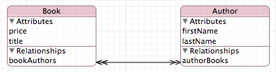
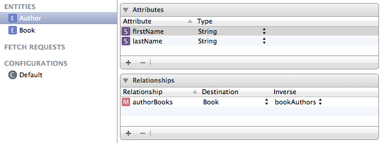
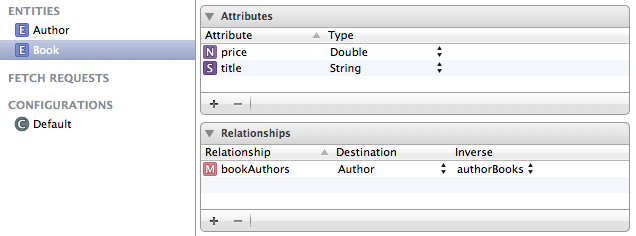
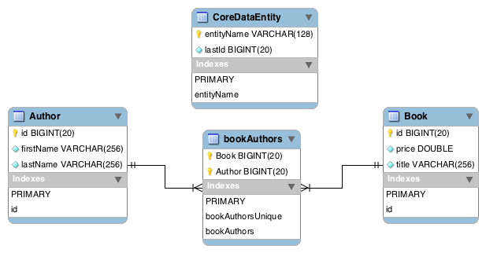

Odbc Reference
Odbc framework documentation
Odbc framework is Cocoa framework providing access to ODBC databases. It works on top of iODBC framework which is a low level C-oriented framework of ODBC routines that follow ODBC specification. The framework includes also an experimental Cocoa Core Data Persistent Store for Odbc.
ODBC framework consists of a number of classes. Currently only OdbcConnection and OdbcStatement are used in non-Core Data applications. OdbcStore class is used in Core Data applications. The rest is for internal framework use.
In order to use Odbc framework you don’t need to know ODBC specification. You do need to know some basics of SQL, relational databases and of course Objective-C.
The documntation consists of:
- This overview page
- Class hierarchy page
- Invidual pages for each class
This repository contains XCode project with 4 targets:
- Odbc - builds the framework itself
- OdbcDocumentation - generates the documentation
- OdbcExample - builds Cocoa Core Data application using Odbc
- OdbcTests - performs unit tests of the framework
Example console application
The following is a simple Cocoa console application that uses Odbc framework.
// main.m
#import <Cocoa/Cocoa.h>
int main (int argc, char * argv []) {
OdbcConnection * connection = [OdbcConnection new];
[connection connect: @"testdb" user: @"root" password: nil];
OdbcStatement * stmt = [connection newStatment];
[stmt execDirect: @"select * from book order by title"];
while ([stmt fetch]) {
long bookId = [stmt getLongByName: @"bookId"];
NSString * title = [stmt getStringByName: @"title"];
double price = [stmt getDoubleByName: @"price"];
NSLog (@"%ld %@ %f",bookId,title,price);
}
[stmt closeCursor];
return 0;
}
In this application we first create an OdbcConnection and then use it to connect to ODBC data source named ‘testdb’ with username ‘root’. Then we create a new OdbcStatement. We use this statement to execute SQl query ‘select * from book order by title’. After that we go into a loop fetching a new row each time aroud. We get ‘bookId’, ‘title’ and ‘price’. Then we write them to the console. When the loop terminates we close the statement.
Prerequisites
First and foremost you need XCode installed on your Mac. If you don’t have it go to AppStore download and install it. It’s free of charge. Test your installation by writting and running a small application.
Next you need a database manager, either standalone on your Mac, or on accessible network server. If you don’t have you need to download and install it. MySql Community Edition is free of charge. Download it and install. You can start/stop it by an applet in System Preferences. You also need to dowload and install MySqlWorkbench. Go ahead and try it out. Create new database (schema) named ‘testdb’. Create table ‘book’ in it. You also need MySql ODBC driver. Download it and install.
Next comes iODBC framework (Odbc framework builds upon iODBC framework). If you don’t have it go to iOdbc site, download and install it. Among other things it will install ‘iOdbc Administrator’ application. You use it in a 2-step process. First you register your ODBC driver - this is done under ‘ODBC Driver’ tab. Then you register your database under either ‘User DSN’ or ‘System DSN’ tab.
Test overall installation, perhaps by running the application above.
Cocoa Core Data example
The example uses the following Core Data model:

The model consists of 2 entities and 2 relationships. Entity Book has attributes ‘price’ and ‘title’. Entity Author has attributes ‘firstName’ and ‘lastName’. The double-headed arrow between the entities represents the 2 relationships. One relationship from entity Book to entity Author is called ‘bookAuthors’ (name not shown in picture above) and the second relationship from entity Author to entity Book is called ‘authorBooks’ (name not shown). Both are one-to-many relationsips. In plain words, each book can be written by a number of authors and each author may have written a number of books.
The nice picture above was generated by XCode Core Data model editor based on the following information entered by application developer:


When example application is run for the first time against a particular ODBC data source it will generate the following schema in the database:

The above diagram has been generated by reverse engineering of a database created by example application using MySQLWorkbench. There are 4 tables. Table ‘CoreDataEntity’ is needed is every ODBC Core Data application. It keeps track of primary keys used in the other tables. For each Core Data entity a table is generated containing column ‘id’ as primary key. The other columns correspond to entity attributes. Example application uses ‘Author’ and ‘Book’. Each pair of entity relationships results in one table. Example application uses ‘authorBooks’ and ‘bookAuthor’ pair of relationships. This results in table ‘bookAuthors’ with columns ‘Book’ and ‘Author’. This table has also foreign keys constraints to both ‘Autor’ and ‘Book’ tables.
The name of ODBC data source, username, and password to use are specified by an URL. You find the following line in method ‘initialize’ in ‘AppDelegate’ class:
PersistentStoreUrl = [NSURL URLWithString : @"odbc:///newdb?username=root"];
This specifies that ODBC data source ‘newdb’, username ‘root’ and no password should be used. A lot of code in ‘AppDelegate’ has is generated by XCode when you specify ‘Core Data’ for a new project. The other classes in the application has been written by me in order to control the UI (mostly drag and drop). Most of work has been done in XCode Interface Builder.
Example application displays the following UI to the user:

Table ‘Librart Books’ displays books in the library. You add/remove books by coresponding +/- buttons under the table. Table ‘Library Authors’ displays authors in the library. You add/remove authors by corresponding +/- buttons under the table. Table ‘Book Authors’ displays authors of the selected book. You add book author by dragging an author from ‘Library Authors" to 'Book Authors’. Table ‘Author Books’ displays books for the selected author. You can drag a book from ‘Library Books’ into ‘Author Books’ to add the book to the selected author. When running the application for the first time against a particular data source the tables will be empty.
Unit tests
Unit tests expect data source ‘testdb", username 'root’ and no password. You can change this in method connect in OdbcTests class. Change the line reading:
[self->connection connect : @"testdb" user : @"root" password : nil];
The tests will create table named ‘testtab’ in the data source. This table will be removed after the tests are done.
Tasks to be performed
In order to build, test and run the software you can follow the list below:
- Download and install XCode from Apple AppStore. It is free of charge.
- Download and install iOdbc framework from http://www.iodbc.org . It is free of charge.
- Dowload and install Git from http://git-scm.com/ . It is free of charge.
- Clone this repository into an empty directory. This will result in an XCode project directory.
- Now you should be able to open the project in XCode and build the targets.
- Dowload a database manager with ODBC driver and client tools. MySQL Community Edition is free of charge. You can download it from http://dev.mysql.com/downloads/mysql/ Download and install the MySQL Community Server, MySQL ODBC connector and MySQLWorkbench.
- Use MySQLWorkbench to create a database.
- Use the ‘iODBC Administrator’ to register your ODBC connector and to create an ODBC data source.
- Now you shoud be able to run the unit tests and example application.